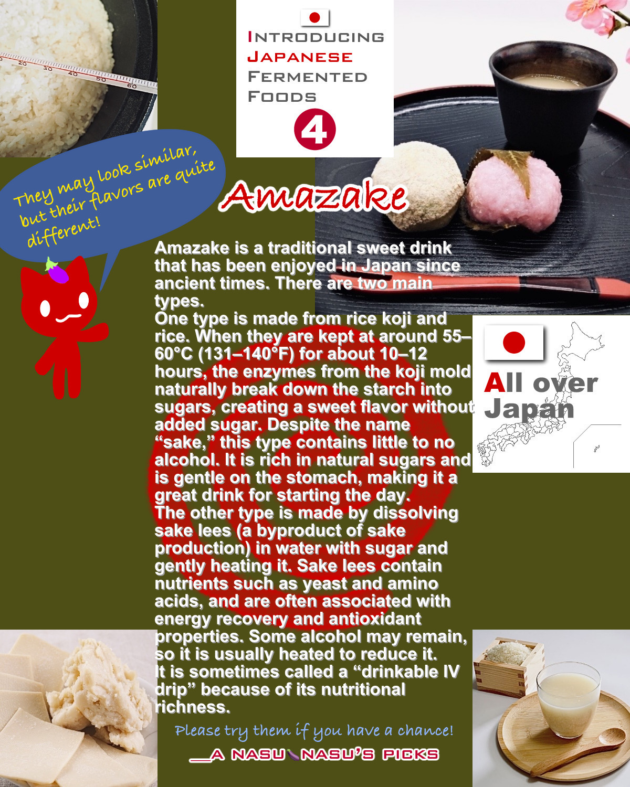

Amazake is said to be rich in nutrients and helpful for relieving fatigue.
However, you shouldn’t drink too much of it.
A while back, I got hooked on the delicious taste of sake kasu amazake.
Personally, I prefer the sake kasu version, but since both are sweet, drinking too much will make you gain weight, so please enjoy them in moderation.
